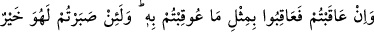
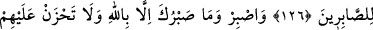
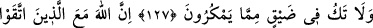
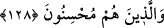

SABIR DAHA HAYIRLIDIR
126. Eğer ceza verecekseniz, size yapılan işkencenin misliyle ceza verin. Ama
sabrederseniz, elbette o, sabredenler için daha hayırlıdır.
127. Sabret! Senin sabrın da ancak Allah’ın yardımı iledir. Onlardan dolayı
kederlenme; kurmakta oldukları tuzaktan kaygı duyma!
128. Çünkü Allah, (kötülükten) sakınanlar ve güzel amel edenlerle beraberdir.
“Eğer ceza verecekseniz,” yâni ceza vermek isterseniz “size yapılan işkencenin
misliyle ceza verin.”
Kurtubî der ki: “Tefsir ehlinin cumhuru, bu âyetin Medîne’de ve şehitlerin seyyidi
Rasûlullah (s.a.)’in amcası Hamza b. Abdulmuttalib hakkında nazil olduğunda ittifak
etmiştir.
Müşrikler Uhud savaşında müslümanların karınlarını deştiler, burunlarını ve
kulaklarını kestiler, hatta avret mahallerini kopardılar. Böyle yapılmayan sâdece
Hanzala b. Rahib kaldı. Çünkü babası Âmir er-Râhib Ebû Süfyan’la beraberdi. Onu
için onu bıraktılar.
Müşrikler Uhud’dan ayrılınca Rasûlulllah (s.a.) savaş meydanına geldi. Kendisini son
derece üzen Hz. Hamza (r.a.)’ın karnının yarıldığını, burnunun ve kulaklarının
kesildiğini gördü. Kalbini bundan daha fazla sızlatan bir hadise ile de karşılaşmamıştı.
Bunun üzerine:
“Allah’ın rahmeti senin üzerine olsun. Sen çok sıla-i rahm yapar, insanların
hayrına pek koşardın. Kadınlar üzülmeseydi ya da benden sonra âdet hâline
gelmesinden korkmasaydım, Allah seni yırtıcı hayvanların ve kuşların karınlarında
tekrar diriltene kadar öylece bırakırdım. Yemin olsun ki, eğer Allah beni onlara karşı
muzaffer kılarsa senin yerine onlardan yetmişine misilleme yapacağım.”[222] buyurdu.
Mü’minler de: “Eğer Allah bizi onlara galib kılarsa, yaptıklarından daha fazlasını
onlara yapacağız. Arablardan hiç kimsenin yapamadığı işkence ile onları öldüreceğiz.”
dediler.
Sonra Peygamber (s.a.) elbisesini istedi ve onunla Hz. Hamza’nın yüzünü örttü.
Ayakları açıkta kaldı. Onları da bir parça izhir otuyla kapattı. Daha sonra onu cenaze